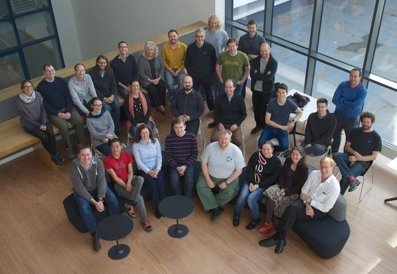
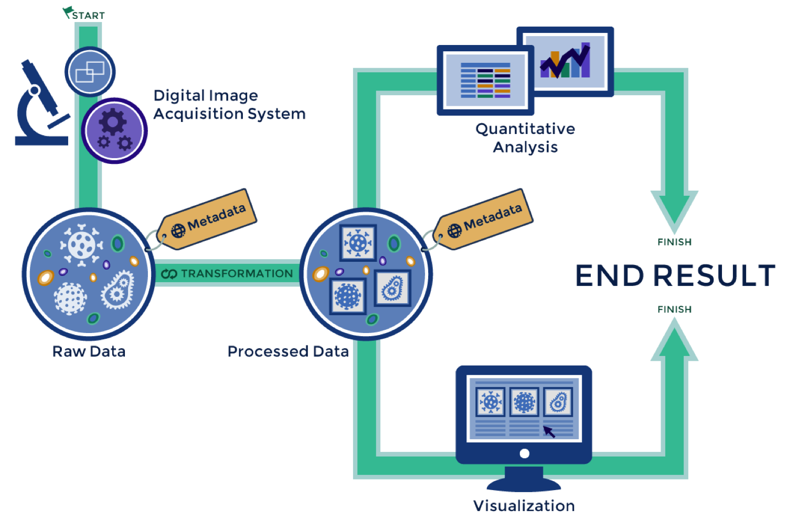

OMERO.figure
Technique Tapas
5th November 2014
Will Moore

OMERO.figure
Presentation Outline
- OME Project
- OMERO
- Figures
- Demo
OME
Open Microscopy Environment
OME Project
- Open Source Software Project
- Largely funded by Wellcome Trust
- Founded in 2000 by J. Swedlow, P. Sorger, I. Goldberg
- Now based in Dundee

A typical microscopy
workflow

OMERO is a server with clients

OMERO in CLS
-
nightshade.openmicroscopy.org
- Available to all in CLS (Dundee Uni login)
- ~300 users, ~50 groups, lots of Data!
- We're happy to help:
- Drop-in sessions: Thursdays 10.00 - 12.00
- "Getting Started" Workshops: 10th & 24th November
Problems
- SLOW
- Loss of Metadata:
- pixel sizes
- channel names
- rendering settings
- No links between Figure and original images
OMERO.figure
- Web-based application
- Beta release in March 2014
- Small number of CLS users, created over 300 figures
- Positive feedback from several external sites
- OMERO.figure 1.0.0 released October 2014
Rotation & Zoom

Finally...
- Save to OMERO
- Export to PDF
- Share url
- Links to images in OMERO
Thank you
- Jason Swedlow
- OME team
- Beta testers
- Katharina Schleicher
- Amy Gerc
- Many others here and elsewhere
- Iain Porter for Data